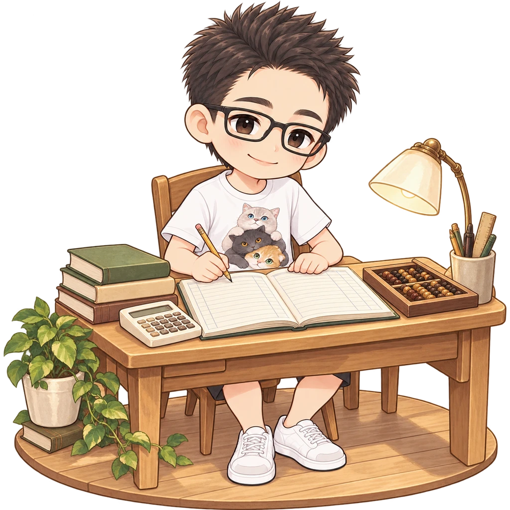
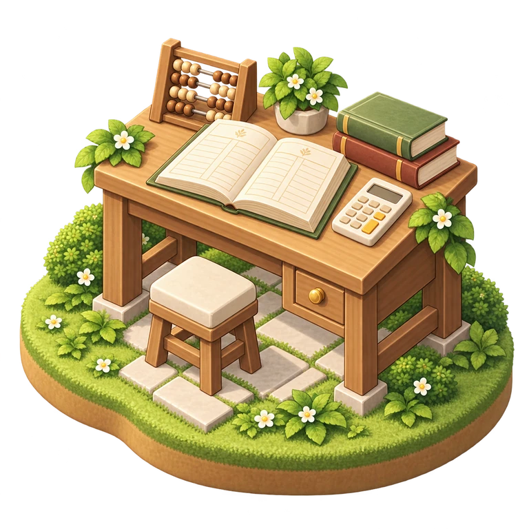
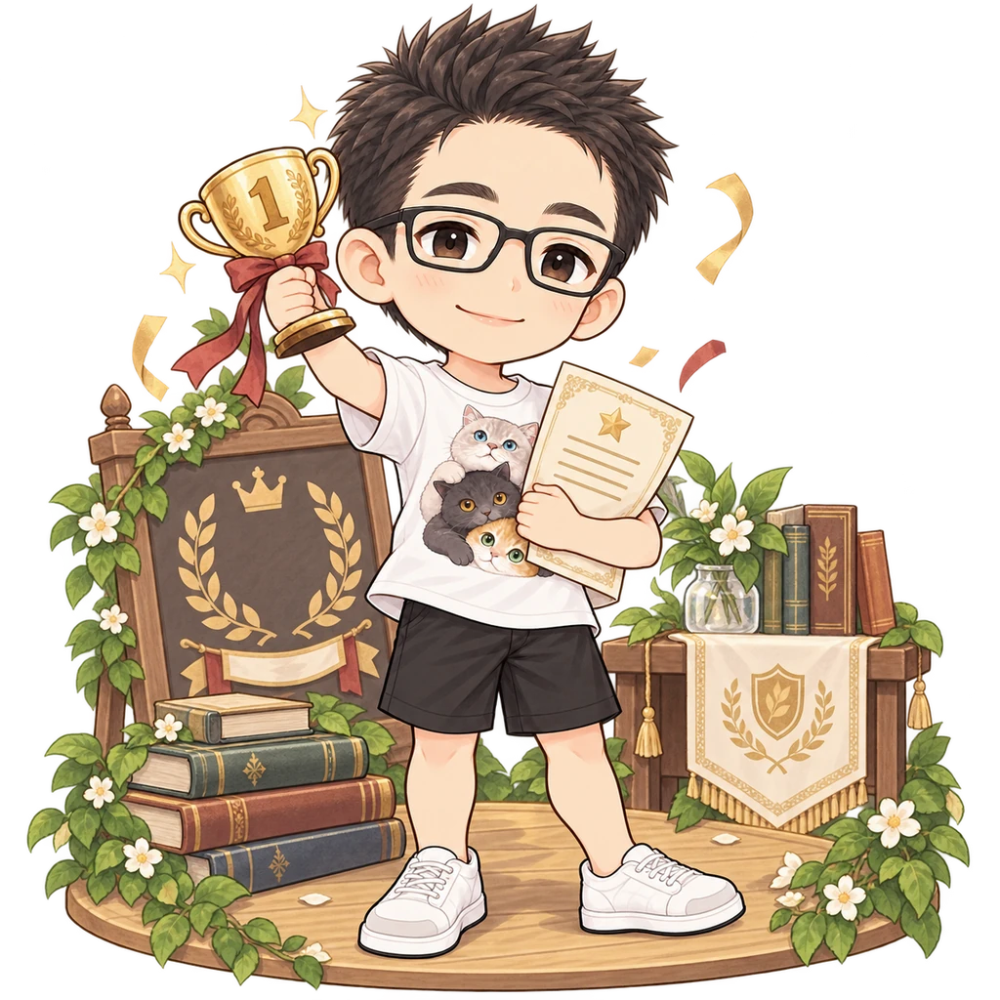
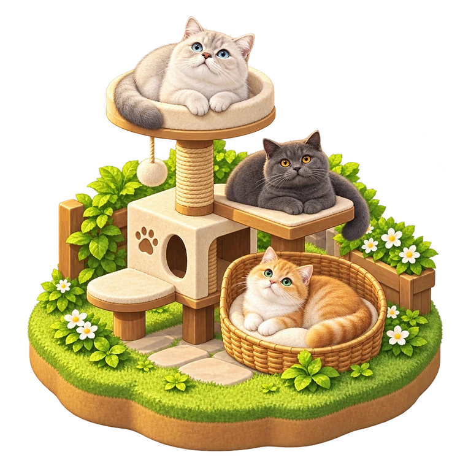
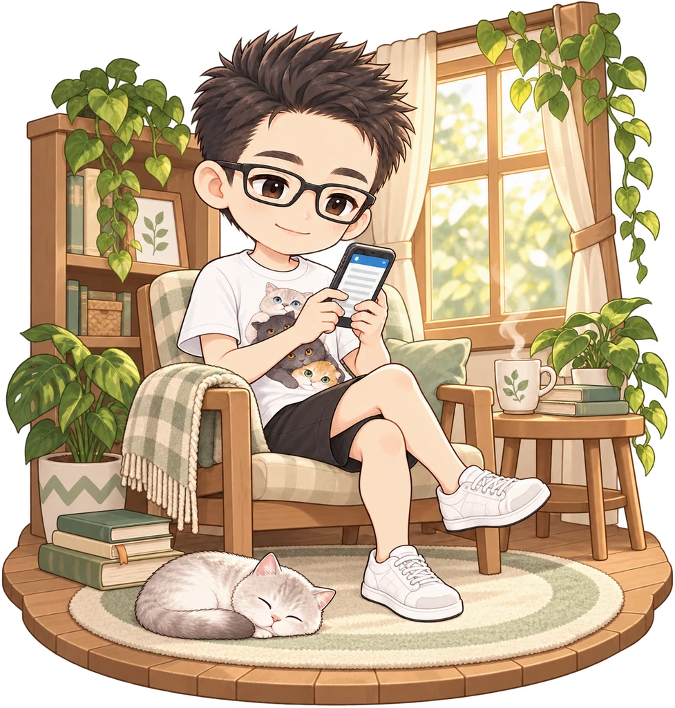
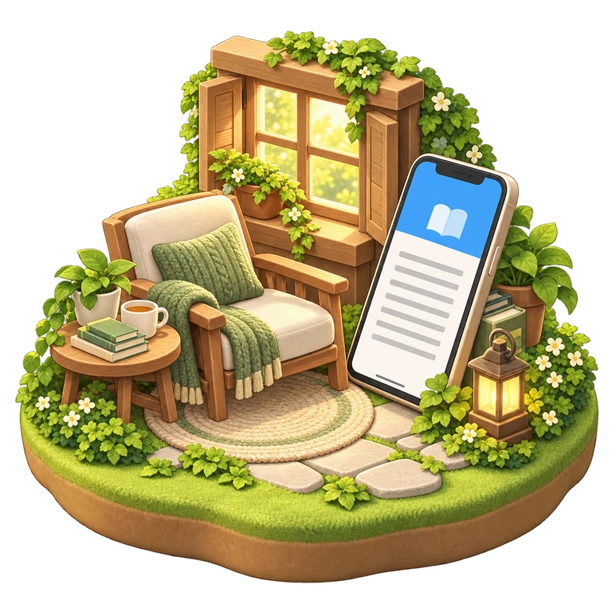
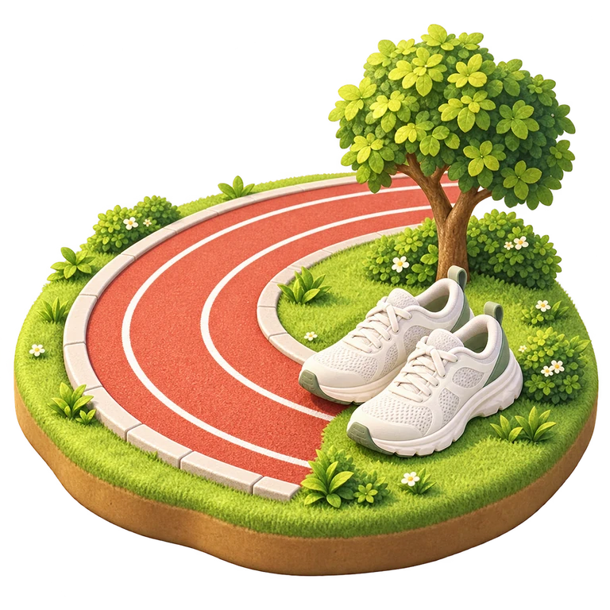
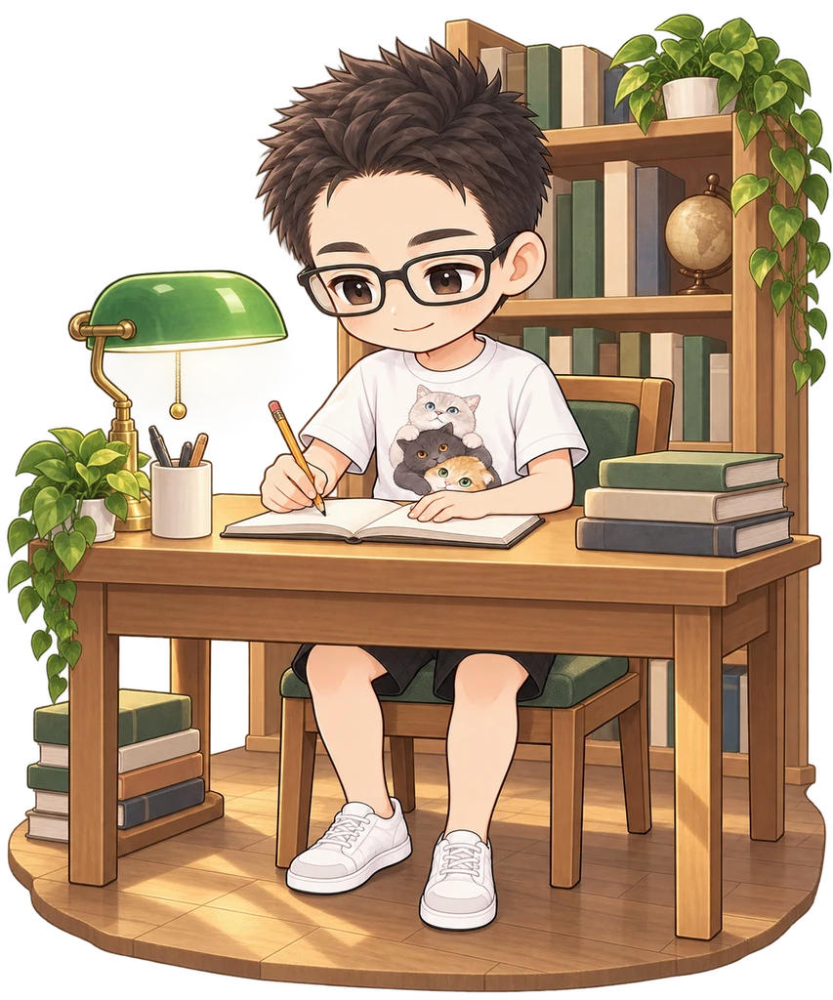
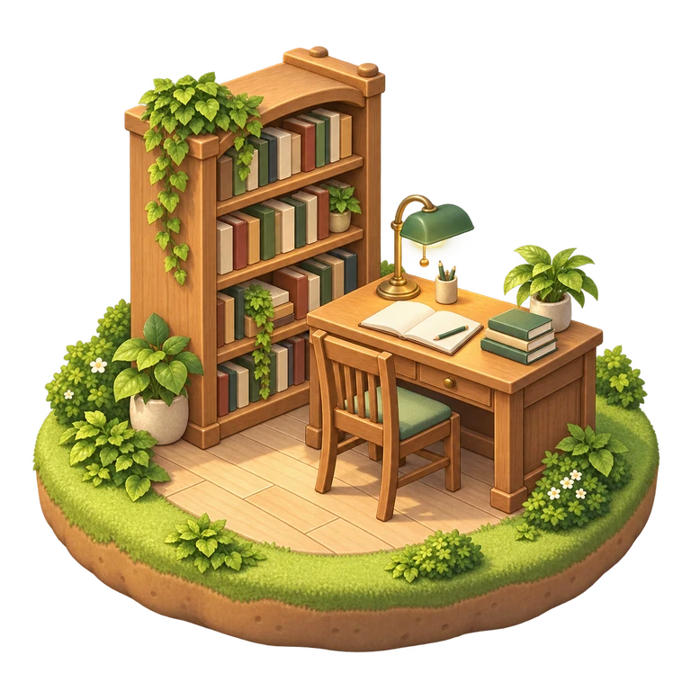
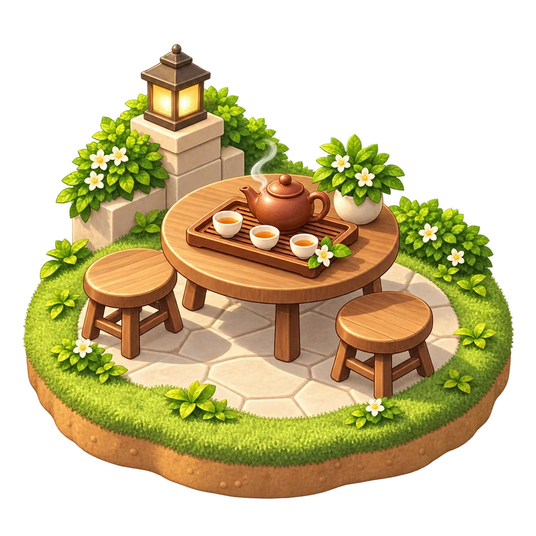

湖山的这一页
地图里的小标记会计学的这一页
湖山的专业是会计学。账本、计算器和一页页笔记，把这一段大学时光留在了这里。送给认真学过这些的你，也送给接下来继续积累的自己。

湖山的这一页地图里的小标记专业绩点第一
专业绩点第一，是属于湖山的一份漂亮成绩。把这个小奖杯放在这里，替那份认真留个位置。新的一岁，也别忘了为已经做到的自己开心一下。
湖山的这一页地图里的小标记
毕业后的下一站 · 中国银行
毕业后，湖山入职中国银行。从校园走向工作，翻开了人生的新一页。愿工作之外，也常有读书、跑步和喝茶的闲暇。
湖山的这一页地图里的小标记
老家在潮州
湖山的老家在潮州。把家乡也放进这张小地图，无论走到哪一站，都有一个熟悉的名字可以想起。
湖山的这一页
地图里的小标记 看到猫，就想多看一眼
湖山喜欢猫。给这份喜欢留一个软乎乎的小角落：蹲下来看看猫，今天的脚步就可以慢一点。

湖山的这一页
地图里的小标记微信读书，再翻一页
打开微信读书，湖山就能接着看喜欢的书。零碎的时间里，也能留下一段完整的阅读。愿新的一岁，总有一本让你想继续翻下去的书。
湖山的这一页
地图里的小标记 跑起来，吹吹风
湖山喜欢跑步。换上运动鞋，跟着自己的节奏向前，把一段时间留给呼吸和脚步。今天不用追什么成绩，跑得舒服就很好。

湖山的这一页
地图里的小标记图书馆里的专注时光
大学时，湖山喜欢去图书馆自习。安静的书桌、一页页翻过的书，是属于他的校园日常。把那份专注收好，也给现在的自己留一点从容。
湖山的这一页
地图里的小标记 坐下来，喝杯茶
湖山喜欢喝茶。茶壶和小杯摆好，日子就可以慢一点。愿新的一岁，忙完之后总有时间坐下来，好好喝一杯。